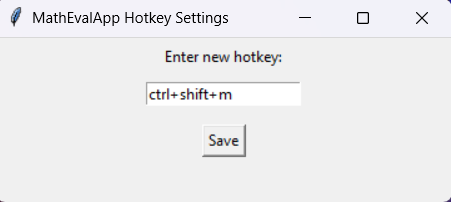

WordMath Macro
A Python macro tool for evaluating simple math inside Microsoft Word when native macros are unavailable.

Problem
In an accounting class, I often needed to do small calculations inside Word documents. Because the school account did not allow native Word macros, I built a lightweight Python utility that could handle the repetitive math workflow externally.
Features
- Runs as a small desktop utility.
- Uses a custom shortcut to evaluate simple math while working in Word.
- Packages the workflow for download without requiring native Word macro installation.